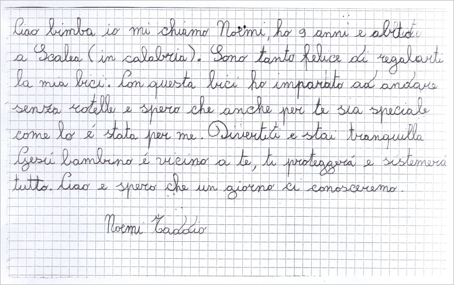

Come Donare
Per sostenere le popolazioni colpite dal devastante terremoto del 24 Agosto è possibile utilizzare il conto corrente attivato da Poste Italiane e Croce Rossa Italiana con le seguenti coordinate:
IBAN: IT38R0760103000000000900050
BIC/SWIFT: BPPIITRRXXX
Beneficiario: Associazione Italiana della Croce Rossa
Causale: "Poste Italiane con Croce Rossa Italiana - Terremoto Centro Italia"
oppure utilizzare il conto corrente della Croce Rossa Italiana con le seguenti coordinate:
IBAN: IT40F0623003204000030631681
BIC/SWIFT: CRPPIT2P086
Beneficiario: Associazione Italiana della Croce Rossa
Causale: "Terremoto Centro Italia"
La donazione in denaro sarà interamente utilizzata da Croce Rossa Italiana per mettere a disposizione della popolazione derrate alimentari e beni di prima necessità che potremmo non avere immediatamente a disposizione nei nostri centri logistici, e per il mantenimento efficiente delle nostre strutture di accoglienza, potendo quindi rispondere prontamente ai bisogni che si manifestano di ora in ora.
Informazioni e contatti:
email:
aiuti@cri.it
Telefono:
06-5510
Ringraziamenti
Sono stati raccolti 10.969.797,14 euro al 13 ottobre 2016. Grazie!
Nell'impossibilità di ringraziare tutti i cittadini e le aziende che ci hanno sostenuto, vorremmo fosse una lettera la donazione che ci racconta:
